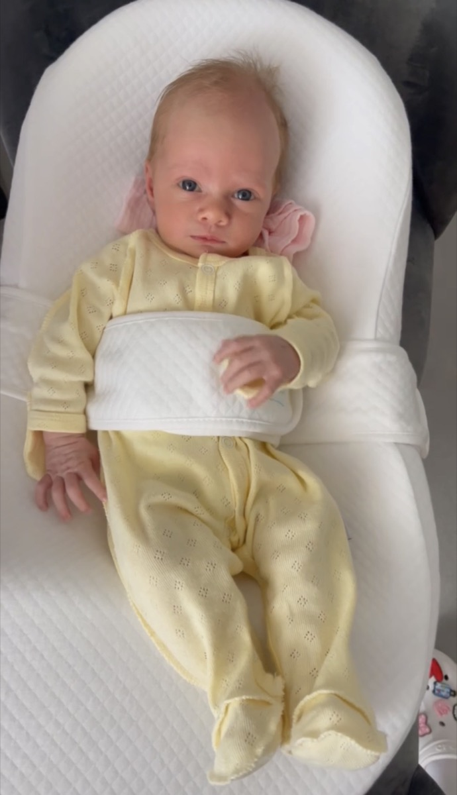
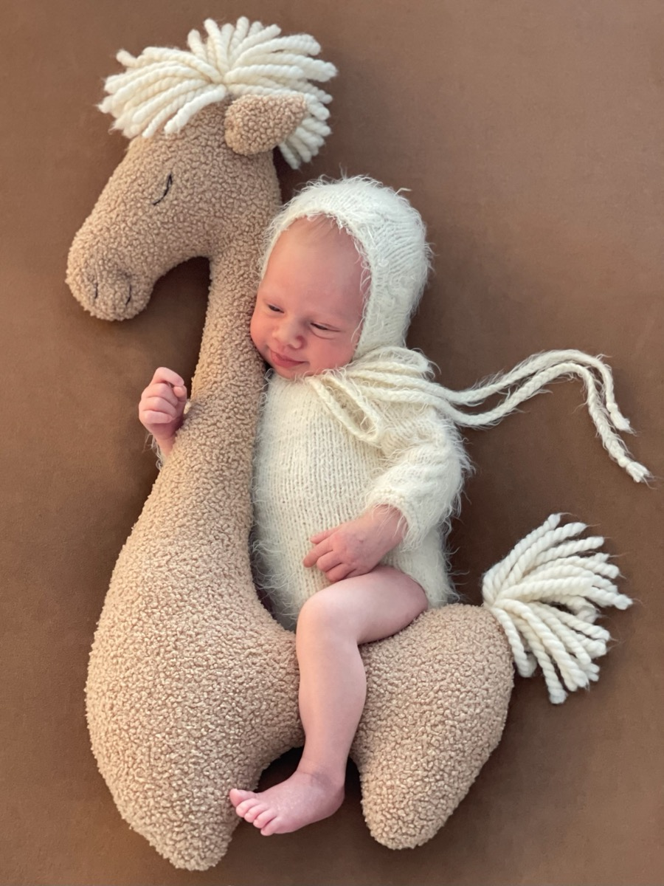

10 июня родилась моя дочь Есения. Мне 45, жене 39, скоро сорок. Первенец, ждали долго.
Ожидали 12-го. Дочь поторопилась и пришла на два дня раньше.
Когда я зашёл в палату, она была на руках у жены. Я не представлял, что она будет настолько маленькой. Голова — с кулак. Рост 54 сантиметра, вес 3360 граммов.

Взять её на руки я решился не сразу. Боялся — резкое движение, и что-то пойдёт не так. У меня крупные руки, и в одной ладони помещался едва ли не весь ребёнок.
Страх прошёл сразу, как только я её взял.
Жена смотрела на нас. Лицо светилось, улыбка не сходила — такая тёплая, такая добрая, какой я раньше у неё не видел. Так умеют улыбаться только мамы. Что я ей сказал, не помню. Может, и ничего не сказал — кажется, просто смотрел то на неё, то на дочь.
Есения спокойная. Иногда бывает не в духе — но с кем не бывает в первые месяцы жизни. Уже прошло почти два месяца.

На улице как будто стало больше детей. Их не больше — это я смотрю иначе.
Сейчас она спит чаще, чем бодрствует. Она в моих мыслях постоянно. Беру её на руки, чувствую тепло — и не понимаю, как раньше жил без этого ощущения. Знаю одно: сорок пять лет оказались разгоном. А она — то, ради чего был разгон.
Не теряйте фокус.